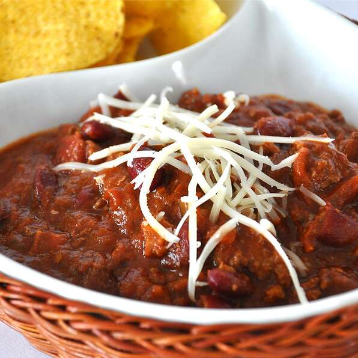

Odin-recipes
Cookies
Description
This is the finished lekker product
Try them at home, just don't burn the house
Ingredients
- 1 pound chocolate sandwich cookies, crushed
- 1 (8 ounce) package cream cheese, softened
- 1 pound vanilla-flavored candy coating, melted
Steps
- In a large mixing bowl, combine crushed cookies and cream cheese to form a stiff dough.
- Roll into balls and dip with a fork in melted candy coating.
- Let rest on waxed paper until set.

Description
This is the finished lekker product
Try it at home, just don't burn the house
Ingredients
- 2 (29 ounce) cans tomato sauce
- 2 (28 ounce) cans peeled and diced tomatoes
- 2 cups diced onion
- 1 tablespoon Italian seasoning
- 2 pounds spicy sausage
- 3 pounds lean ground beef
- 1 (32 ounce) bottle hickory smoke barbeque sauce
- ½ cup chili powder
- ½ cup chili powder
- ½ cup chili powder
Steps
- In a large pot or Dutch oven over medium heat, combine tomato sauce, tomatoes, onion and Italian seasoning.
- In a large skillet over medium heat, cook bacon until slightly crisp. Drain and stir into the pot.
- In the same skillet over medium heat, cook sausage until brown. Drain and stir into the pot.
- In the same skillet over medium heat, cook the beef until brown. Drain and stir into the pot.
- Stir the barbeque sauce and chili powder into the pot; taste and adjust seasonings. Stir in the kidney beans and chocolate and simmer until flavors are well blended. Serve.
Chillie